Chapter 10 Task 359959
We present the results of our analysis of task 359959 with the different selection set splits used in our study.
10.1 5%
10.1.1 Testing set accuracy
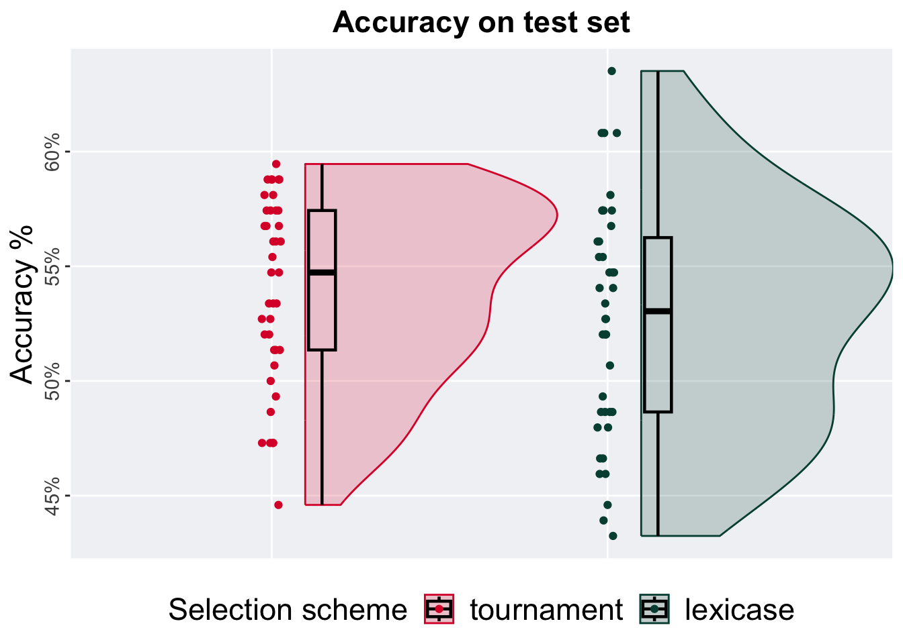
Summary statistics for the testing performance of the selection schemes at the 5% selection set split:
## # A tibble: 2 × 8
## selection count na_cnt min median mean max IQR
## <fct> <int> <int> <dbl> <dbl> <dbl> <dbl> <dbl>
## 1 tournament 40 0 0.446 0.547 0.540 0.595 0.0608
## 2 lexicase 40 0 0.432 0.530 0.527 0.635 0.0760The permutation test revealed that the results are:
tournament_results <- filter(task_data, split == '5%' & selection == 'tournament')
lexicase_results <- filter(task_data, split == '5%' & selection == 'lexicase')
permutation_test(tournament_results$testing_performance,
lexicase_results$testing_performance,
seed = 81,
alternative = "t")## [1] "observed_diff: 1.22405437285302"
## [1] "lower: -1.97110919644234"
## [1] "upper: 2.00592908399195"
## [1] "fail to reject null hypothesis"
## [1] "p-value: 0.22576"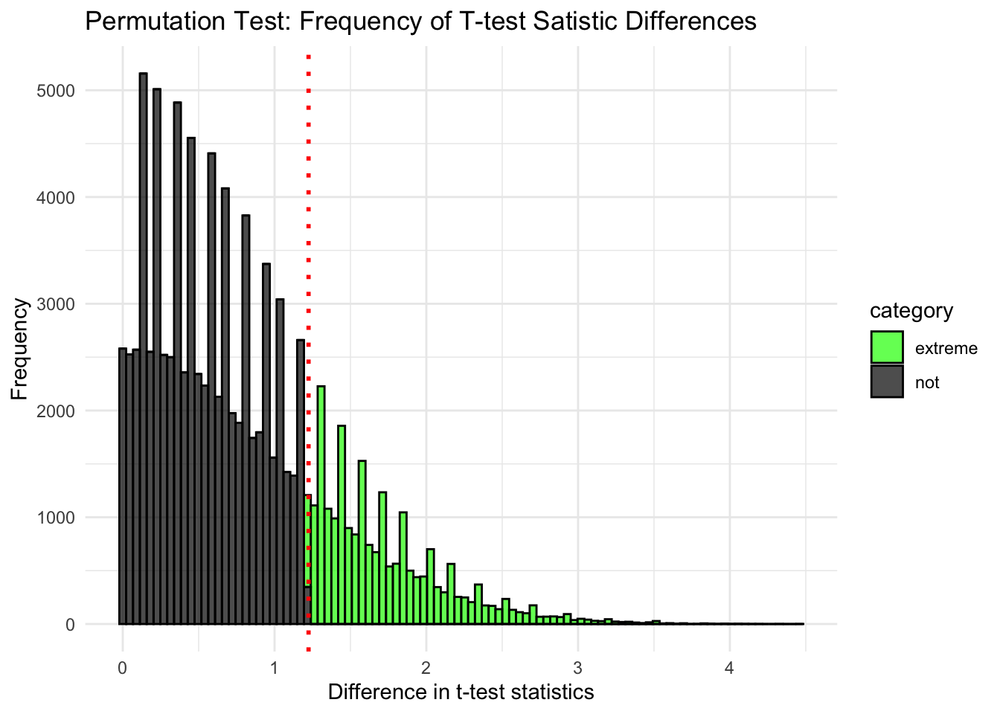
10.1.2 Selection set accuracy
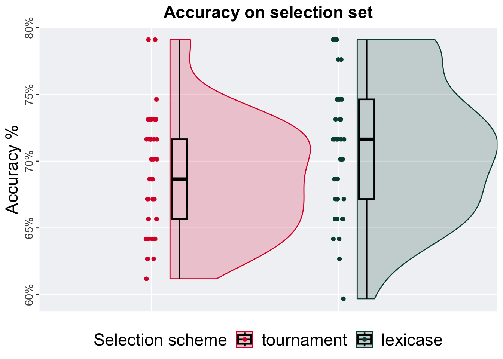
Summary statistics for the testing performance of the selection schemes at the 5% selection set split:
## # A tibble: 2 × 8
## selection count na_cnt min median mean max IQR
## <fct> <int> <int> <dbl> <dbl> <dbl> <dbl> <dbl>
## 1 tournament 40 0 0.612 0.687 0.688 0.791 0.0597
## 2 lexicase 40 0 0.597 0.716 0.711 0.791 0.0746The permutation test revealed that the results are:
tournament_results <- filter(task_data, split == '5%' & selection == 'tournament')
lexicase_results <- filter(task_data, split == '5%' & selection == 'lexicase')
permutation_test(tournament_results$training_performance,
lexicase_results$training_performance,
seed = 82,
alternative = "l")## [1] "observed_diff: -2.13091175211124"
## [1] "permutation_diffs[0.05 * n_permutations]: -1.69431049247206"
## [1] "reject null hypothesis"
## [1] "p-value: 0.01963"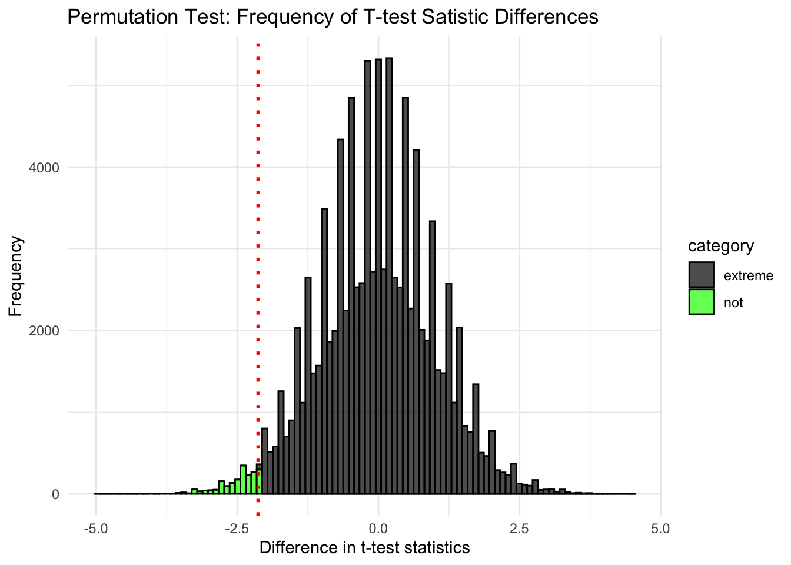
10.2 10%
10.2.1 Testing set accuracy
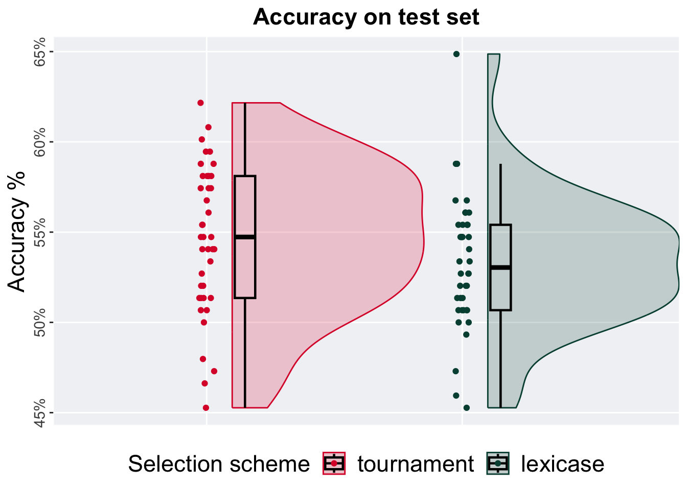
Summary statistics for the testing performance of the selection schemes at the 5% selection set split:
## # A tibble: 2 × 8
## selection count na_cnt min median mean max IQR
## <fct> <int> <int> <dbl> <dbl> <dbl> <dbl> <dbl>
## 1 tournament 40 0 0.453 0.547 0.546 0.622 0.0676
## 2 lexicase 40 0 0.453 0.530 0.532 0.649 0.0473The permutation test revealed that the results are:
tournament_results <- filter(task_data, split == '10%' & selection == 'tournament')
lexicase_results <- filter(task_data, split == '10%' & selection == 'lexicase')
permutation_test(tournament_results$testing_performance,
lexicase_results$testing_performance,
seed = 83,
alternative = "t")## [1] "observed_diff: 1.52463147615729"
## [1] "lower: -2.01518489005153"
## [1] "upper: 1.97367777918776"
## [1] "fail to reject null hypothesis"
## [1] "p-value: 0.13434"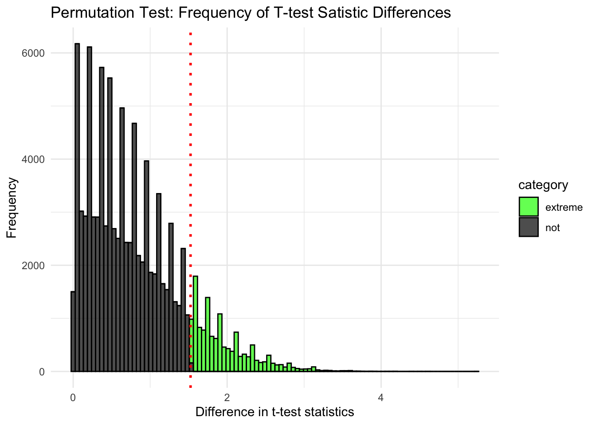
10.2.2 Selection set accuracy
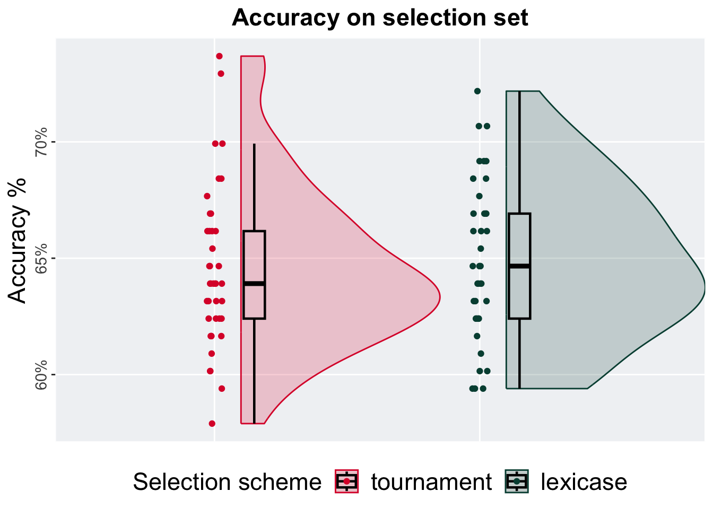
Summary statistics for the testing performance of the selection schemes at the 5% selection set split:
## # A tibble: 2 × 8
## selection count na_cnt min median mean max IQR
## <fct> <int> <int> <dbl> <dbl> <dbl> <dbl> <dbl>
## 1 tournament 40 0 0.579 0.639 0.645 0.737 0.0376
## 2 lexicase 40 0 0.594 0.647 0.648 0.722 0.0451The permutation test revealed that the results are:
tournament_results <- filter(task_data, split == '10%' & selection == 'tournament')
lexicase_results <- filter(task_data, split == '10%' & selection == 'lexicase')
permutation_test(tournament_results$training_performance,
lexicase_results$training_performance,
seed = 84,
alternative = "t")## [1] "observed_diff: -0.471913297591953"
## [1] "lower: -2.0094448325709"
## [1] "upper: 2.00944582884462"
## [1] "fail to reject null hypothesis"
## [1] "p-value: 0.63609"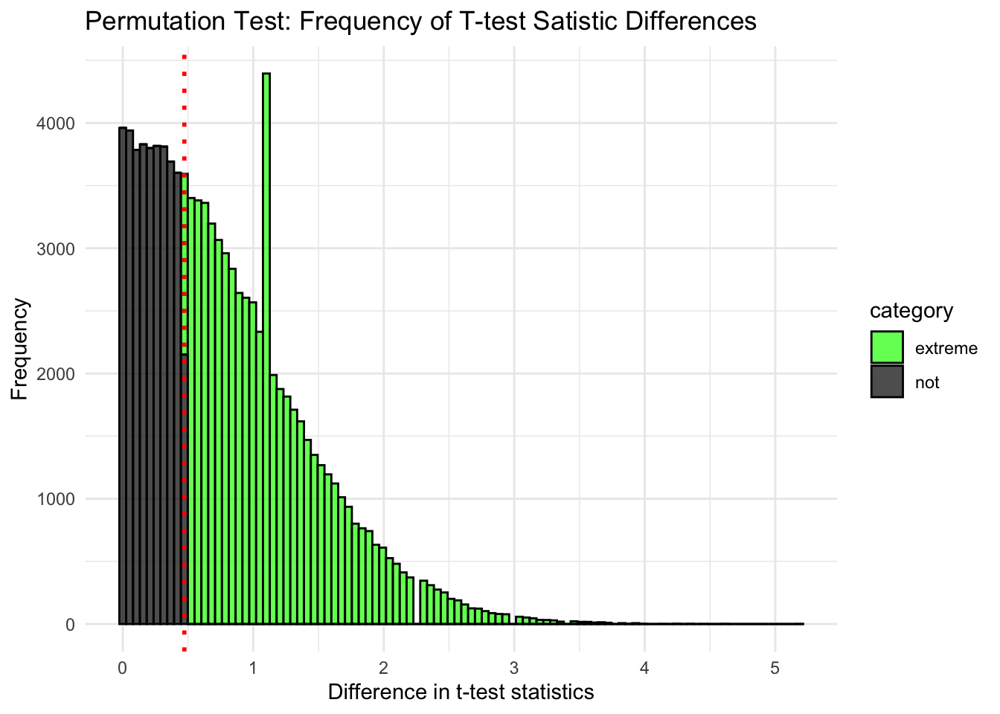
10.3 50%
10.3.1 Testing set accuracy
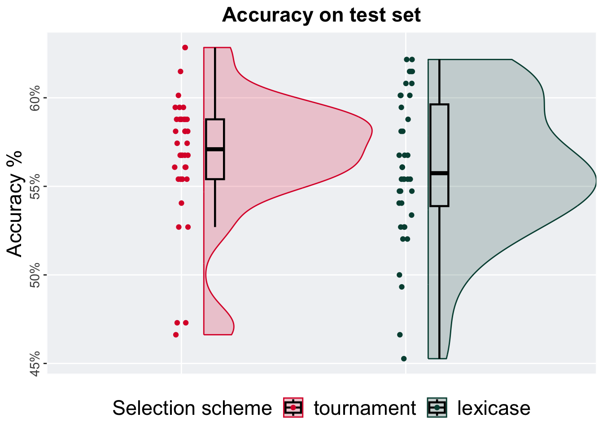
Summary statistics for the testing performance of the selection schemes at the 5% selection set split:
## # A tibble: 2 × 8
## selection count na_cnt min median mean max IQR
## <fct> <int> <int> <dbl> <dbl> <dbl> <dbl> <dbl>
## 1 tournament 40 0 0.466 0.571 0.567 0.628 0.0338
## 2 lexicase 40 0 0.453 0.557 0.560 0.622 0.0574The permutation test revealed that the results are:
tournament_results <- filter(task_data, split == '50%' & selection == 'tournament')
lexicase_results <- filter(task_data, split == '50%' & selection == 'lexicase')
permutation_test(tournament_results$testing_performance,
lexicase_results$testing_performance,
seed = 85,
alternative = "t")## [1] "observed_diff: 0.86047817755061"
## [1] "lower: -1.99548160987446"
## [1] "upper: 1.99548229277239"
## [1] "fail to reject null hypothesis"
## [1] "p-value: 0.39919"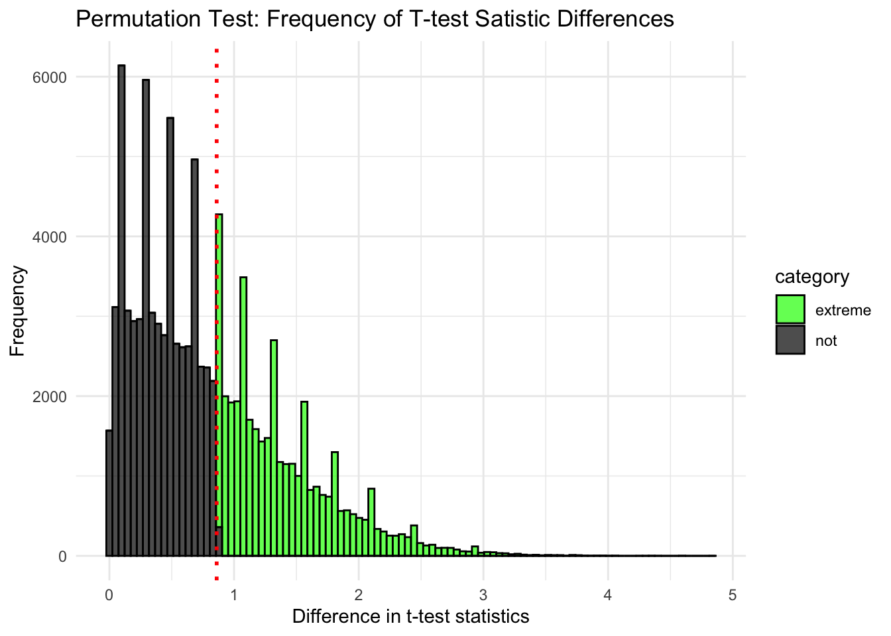
10.3.2 Selection set accuracy
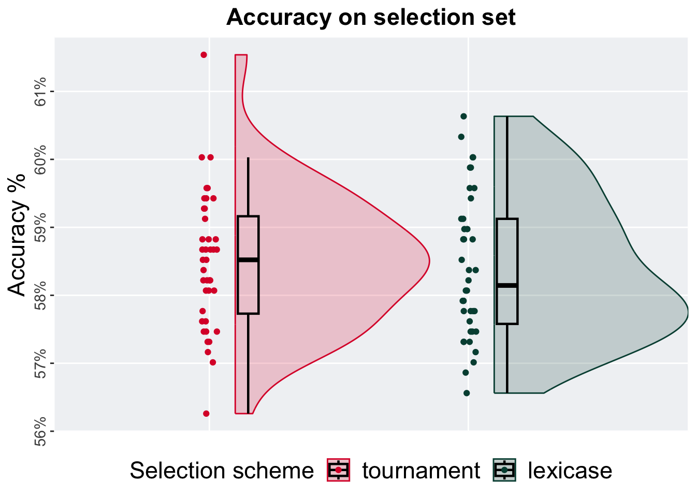
Summary statistics for the testing performance of the selection schemes at the 5% selection set split:
## # A tibble: 2 × 8
## selection count na_cnt min median mean max IQR
## <fct> <int> <int> <dbl> <dbl> <dbl> <dbl> <dbl>
## 1 tournament 40 0 0.563 0.585 0.585 0.615 0.0143
## 2 lexicase 40 0 0.566 0.581 0.584 0.606 0.0155The permutation test revealed that the results are:
tournament_results <- filter(task_data, split == '50%' & selection == 'tournament')
lexicase_results <- filter(task_data, split == '50%' & selection == 'lexicase')
permutation_test(tournament_results$training_performance,
lexicase_results$training_performance,
seed = 86,
alternative = "t")## [1] "observed_diff: 0.378541953307579"
## [1] "lower: -2.00662736312658"
## [1] "upper: 1.97121031816678"
## [1] "fail to reject null hypothesis"
## [1] "p-value: 0.7189"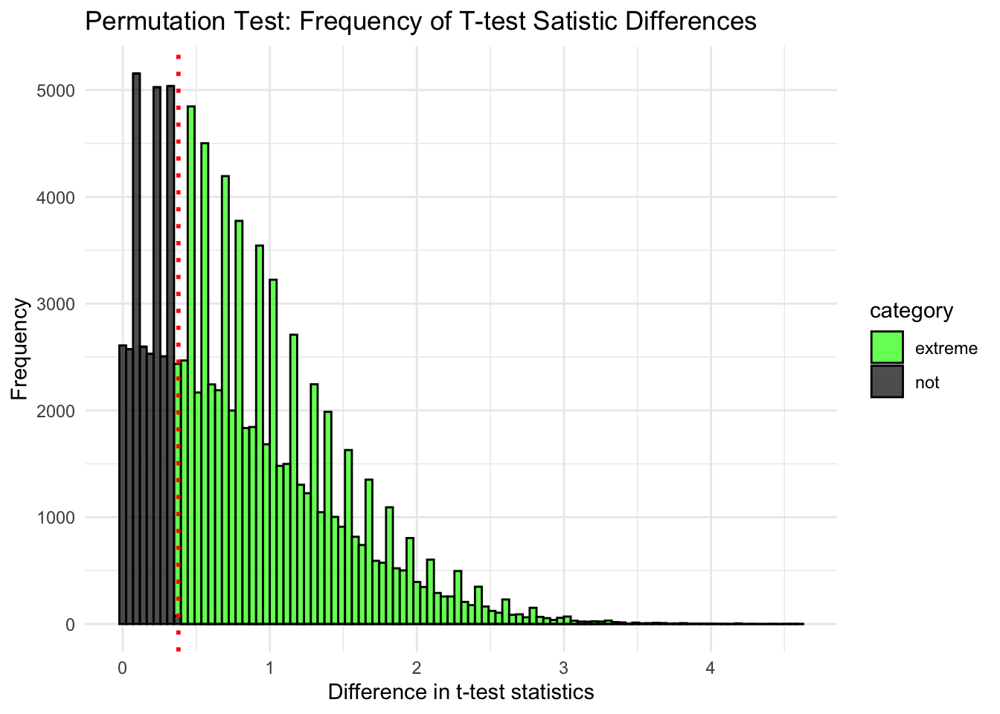
10.4 90%
10.4.1 Testing set accuracy
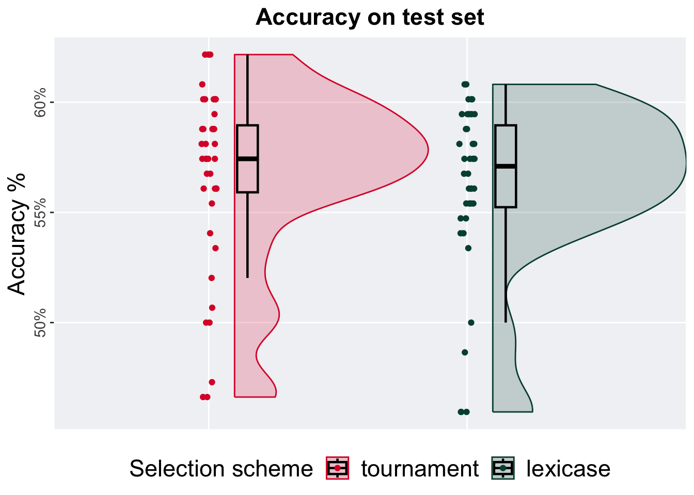
Summary statistics for the testing performance of the selection schemes at the 5% selection set split:
## # A tibble: 2 × 8
## selection count na_cnt min median mean max IQR
## <fct> <int> <int> <dbl> <dbl> <dbl> <dbl> <dbl>
## 1 tournament 40 0 0.466 0.574 0.566 0.622 0.0304
## 2 lexicase 40 0 0.459 0.571 0.561 0.608 0.0372The permutation test revealed that the results are:
tournament_results <- filter(task_data, split == '90%' & selection == 'tournament')
lexicase_results <- filter(task_data, split == '90%' & selection == 'lexicase')
permutation_test(tournament_results$testing_performance,
lexicase_results$testing_performance,
seed = 87,
alternative = "t")## [1] "observed_diff: 0.486150157327831"
## [1] "lower: -1.99036008856116"
## [1] "upper: 1.99036008856116"
## [1] "fail to reject null hypothesis"
## [1] "p-value: 0.63556"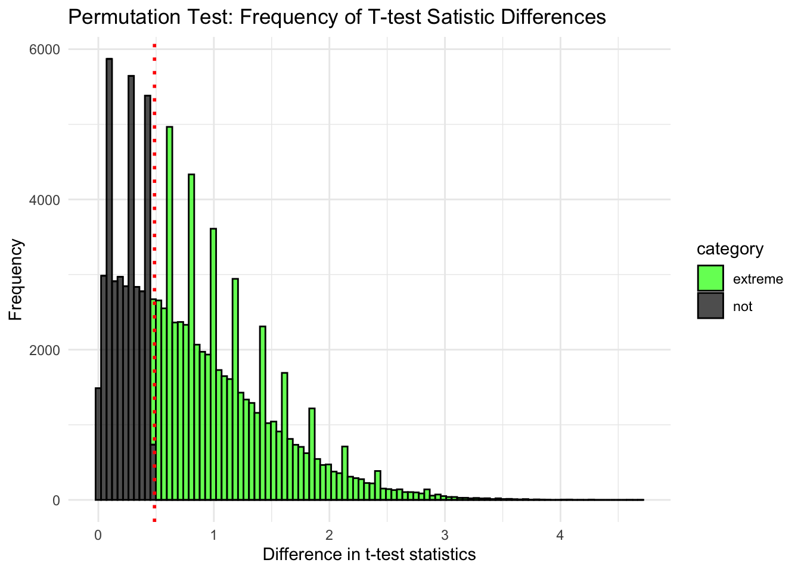
10.4.2 Selection set accuracy
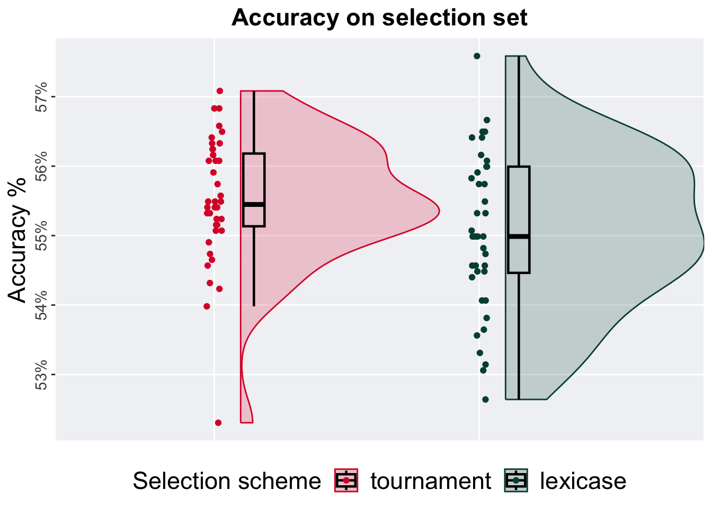
Summary statistics for the testing performance of the selection schemes at the 5% selection set split:
## # A tibble: 2 × 8
## selection count na_cnt min median mean max IQR
## <fct> <int> <int> <dbl> <dbl> <dbl> <dbl> <dbl>
## 1 tournament 40 0 0.523 0.554 0.555 0.571 0.0105
## 2 lexicase 40 0 0.526 0.550 0.551 0.576 0.0153The permutation test revealed that the results are:
tournament_results <- filter(task_data, split == '90%' & selection == 'tournament')
lexicase_results <- filter(task_data, split == '90%' & selection == 'lexicase')
permutation_test(tournament_results$training_performance,
lexicase_results$training_performance,
seed = 88,
alternative = "t")## [1] "observed_diff: 1.93069243094997"
## [1] "lower: -2.00723673836918"
## [1] "upper: 1.98806145362816"
## [1] "fail to reject null hypothesis"
## [1] "p-value: 0.05679"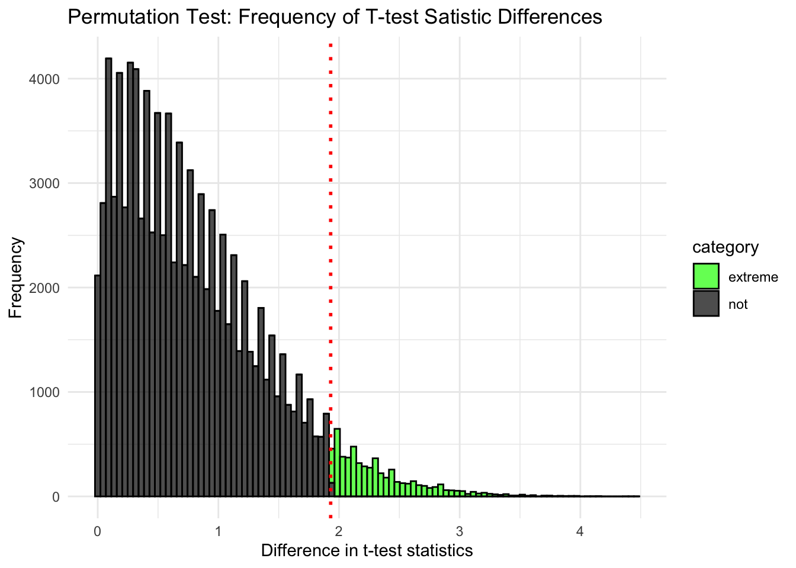
10.5 95%
10.5.1 Testing set accuracy
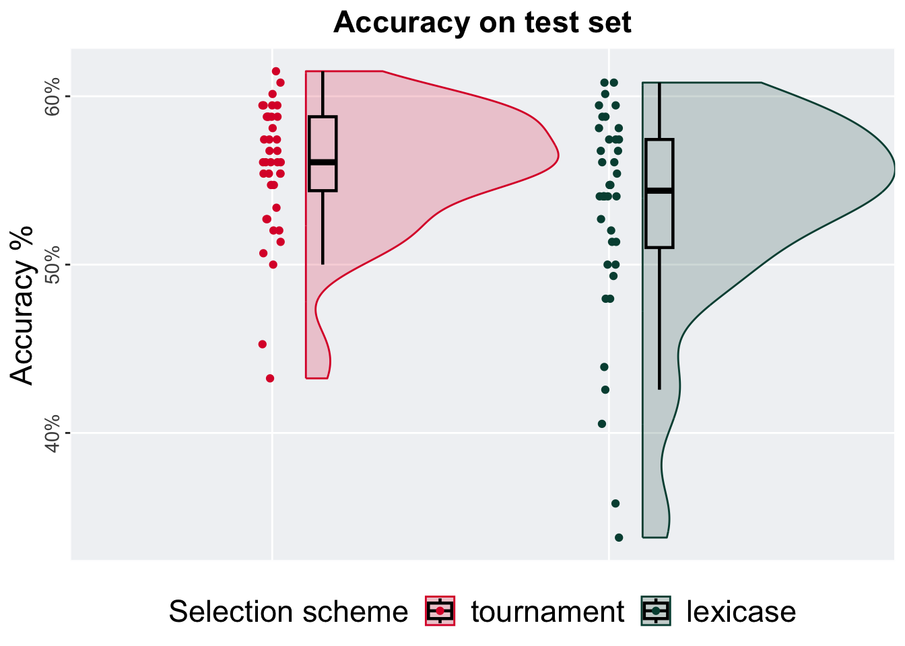
Summary statistics for the testing performance of the selection schemes at the 5% selection set split:
## # A tibble: 2 × 8
## selection count na_cnt min median mean max IQR
## <fct> <int> <int> <dbl> <dbl> <dbl> <dbl> <dbl>
## 1 tournament 40 0 0.432 0.561 0.557 0.615 0.0439
## 2 lexicase 40 0 0.338 0.544 0.531 0.608 0.0642The permutation test revealed that the results are:
tournament_results <- filter(task_data, split == '95%' & selection == 'tournament')
lexicase_results <- filter(task_data, split == '95%' & selection == 'lexicase')
permutation_test(tournament_results$testing_performance,
lexicase_results$testing_performance,
seed = 89,
alternative = "g")## [1] "observed_diff: 2.14920138405129"
## [1] "permutation_diffs[0.95 * n_permutations]: 1.64591413063659"
## [1] "reject null hypothesis"
## [1] "p-value: 0.01608"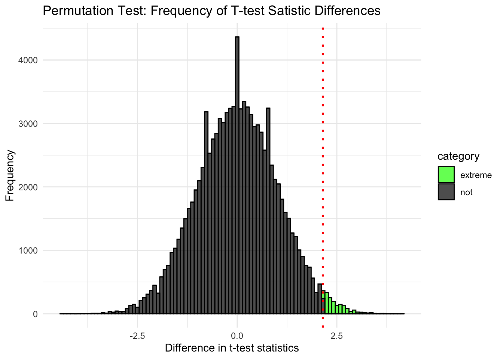
10.5.2 Selection set accuracy
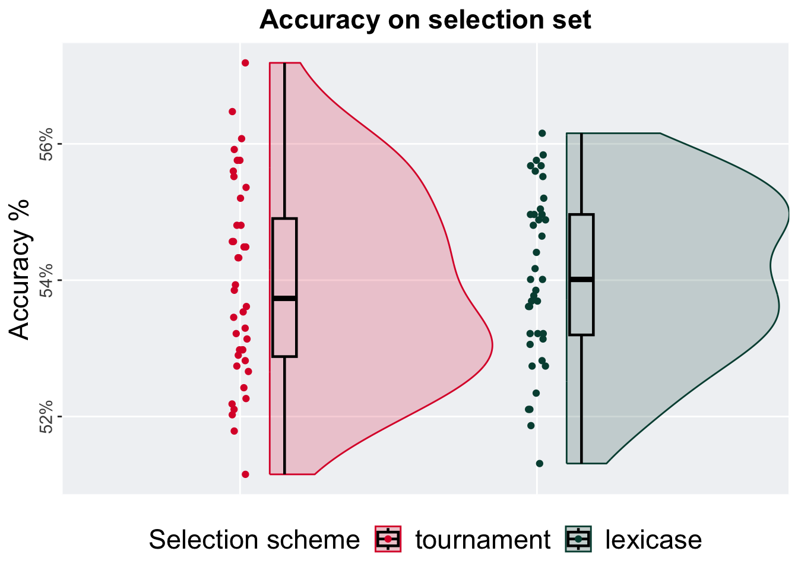
Summary statistics for the testing performance of the selection schemes at the 5% selection set split:
## # A tibble: 2 × 8
## selection count na_cnt min median mean max IQR
## <fct> <int> <int> <dbl> <dbl> <dbl> <dbl> <dbl>
## 1 tournament 40 0 0.512 0.537 0.539 0.572 0.0203
## 2 lexicase 40 0 0.513 0.540 0.541 0.562 0.0177The permutation test revealed that the results are:
tournament_results <- filter(task_data, split == '95%' & selection == 'tournament')
lexicase_results <- filter(task_data, split == '95%' & selection == 'lexicase')
permutation_test(tournament_results$training_performance,
lexicase_results$training_performance,
seed = 90,
alternative = "t")## [1] "observed_diff: -0.413305888924775"
## [1] "lower: -1.9953719420889"
## [1] "upper: 1.99537354233663"
## [1] "fail to reject null hypothesis"
## [1] "p-value: 0.68262"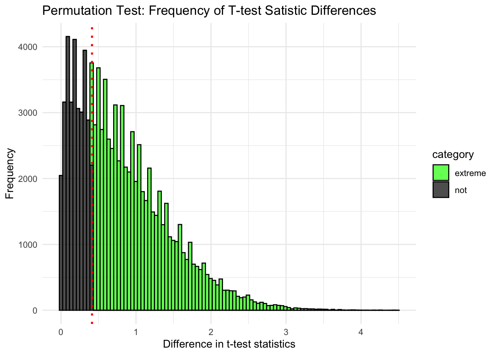